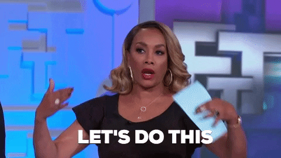
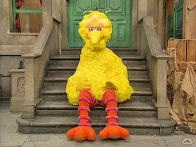
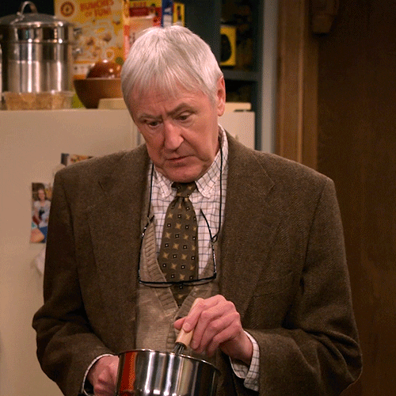
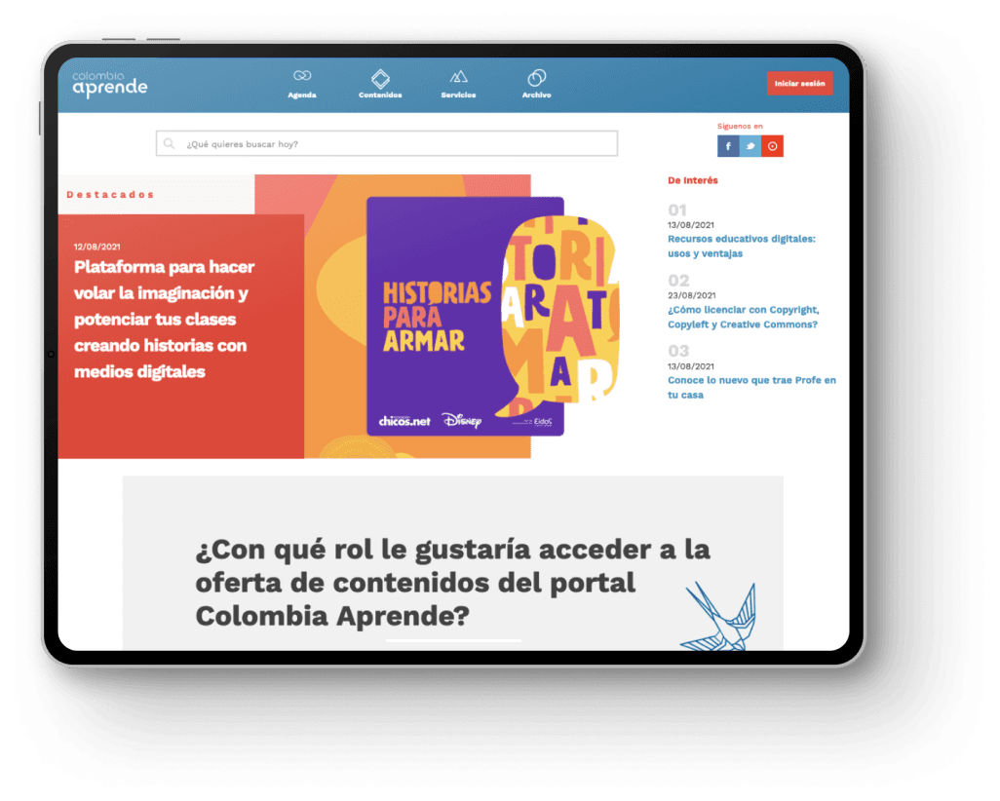
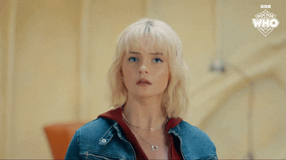
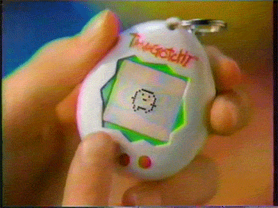
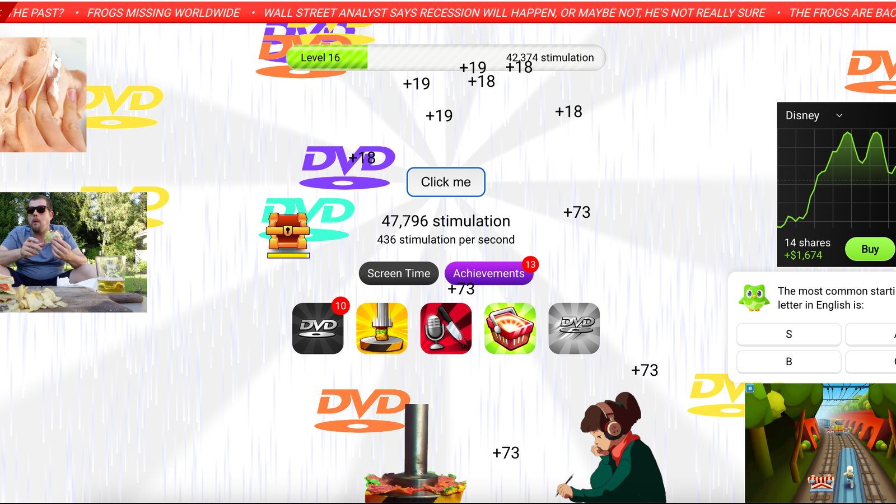
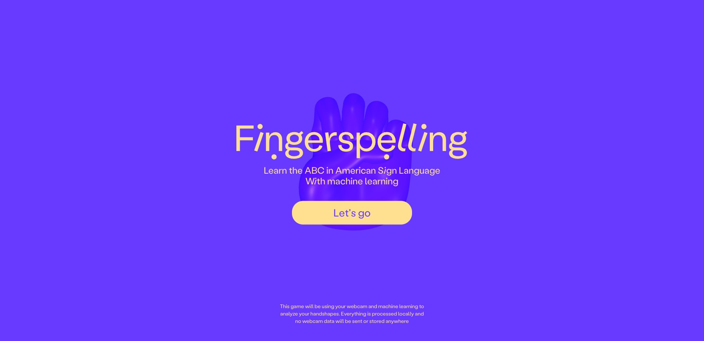

Gracias por la puntualidad
En breve comenzamos
Pensamiento
SENSORIAL
Clase 1
¿Qué queda en el medio?
Hola. Soy William Montoya.
Estudié Periodismo aquí, en la Universidad de Antioquia, y terminé dedicándome al diseño: a entender cómo las personas interactúan con la tecnología.
Con los años algo me empezó a incomodar: hablábamos de interfaces como si solo fueran herramientas para completar tareas.
¿Qué tipo de relación construyen esos sistemas con las personas que los usan?
Esa es la pregunta que dio origen a este curso.
No me interesa que al final del semestre piensen igual que yo: me interesa que tengan mejores argumentos para defender cómo piensan ustedes.
Y es que ése es el corazón de este curso. El pensamiento. La cognición. No sólo lo que ocurre en nuestra mente, sino también lo que se conoce como "cognición encarnada", el famoso "Pensamiento Sensorial".
"El cuerpo es nuestro medio general para tener un mundo."
Maurice Merleau-Ponty — Fenomenología de la percepción, 1945
Ahora quiero conocerlos. No sólo por su nombre y sus intereses, sino por algo que hayan creado.
Piensen en los semestres que llevan: ¿cuál es el proyecto del que se sienten más orgullosos?
¿En qué consistía?
¿Por qué fue importante para ustedes?
¿Qué querían que sintiera, pensara o hiciera la audiencia al encontrarse con ese proyecto?
LABORATORIO 1
Lo que las cosas quieren de ti

Armemos grupos de tres o cuatro personas.
Saquen cualquier objeto que tengan a la mano: un celular, un cuaderno, un lapicero, una billetera, unos audífonos. Mientras más cotidiano, mejor.
Ahora intercámbienlo con el grupo que tienen al lado.
Durante diez minutos van a observar un objeto que no es suyo. No lo juzguen: intenten entender qué tipo de relación propone.
¿Qué parece posible hacer con este objeto?
¿Qué les hace pensar eso? ¿Qué encontraron en el objeto que les dio esa pista?
Puede ser su forma, un botón, un color, un material, una textura, una etiqueta, un sonido o una ausencia.
¿Qué parece esperar este objeto de quien lo usa?
¿Pide cuidado? ¿Rapidez? ¿Precisión? ¿Paciencia? ¿Fuerza? ¿Exploración? ¿Confianza?
Si tuvieran que describir con solo tres palabras la relación que este objeto propone, ¿cuáles serían?
Cuando terminen, devuélvanle el objeto a su dueño.
¿Quién escuchó una descripción de su propio objeto que nunca había pensado?
¿Qué cambió entre las interpretaciones: el objeto, las personas o la situación?
El uso es una relación que se construye.
Un objeto no solo sirve para algo: les pide una forma de comportarse. Esa "petición" no es natural: alguien la diseñó.
RECESO

¿QUÉ QUEDA
EN EL MEDIO?
En el laboratorio no encontramos el uso verdadero de los objetos.
Encontramos formas de relacionarnos con ellos.
Para describirlas tuvimos que hablar de una forma, de un cuerpo, de una situación, de una historia y de unas expectativas.
El uso no está terminado dentro del objeto: se construye en el encuentro.
Entre una persona y aquello con lo que se relaciona siempre hay algo que organiza el encuentro.
La forma, las marcas, las reglas, el ritmo de respuesta, lo que ya aprendimos y lo que el cuerpo puede hacer.
A ese quedarse en el medio —y cambiar lo que pasa de un lado y del otro— lo vamos a llamar mediación.
Un mapa no nos entrega el territorio intacto: selecciona, escala, omite y orienta.
Una cámara no conserva un instante intacto: encuadra, calcula, enfoca y deja algo afuera.
Mediar no es transportar una relación intacta. Es darle una forma.
Solemos imaginar la interfaz como una pantalla: una ventana por la que miramos algo que está del otro lado.
Alexander Galloway propone verla como una zona con su propia lógica.
La interfaz no es solo por donde pasamos para llegar a otra cosa: también es un lugar donde algo nos pasa.
Primera relación
CON LOS OBJETOS
Y LOS SISTEMAS
Un cajero no solo entrega dinero.
Organiza una relación con el banco, la espera, el riesgo, la privacidad y la seguridad.
Un teléfono de disco no es importante porque alguien joven no sepa usarlo.

Es importante porque medió de otra manera el tiempo, la espera, el error y el cuerpo.
Jesús Martín-Barbero llamó mediaciones a los procesos por los que una tecnología adquiere sentido en una cultura.
Ninguna interfaz llega sola: entra en una historia de usos, cuerpos y relaciones.

Segunda relación
CON OTRAS
PERSONAS
Un mensaje no llega igual en una carta, una llamada, un audio o un chat.
El afecto puede ser el mismo. La relación no llega igual.
Cada medio organiza otras presencias, otras ausencias, otros tiempos y otras obligaciones.
Pruébenlo
“¿Llegaste bien?”
¿Qué relación cambia según el medio?
WhatsApp añadió señales diminutas: “en línea”, “escribiendo”, dos checks, hora de conexión, silencio.
Esas señales no describen una relación que ya existía.
Ayudan a producirla: le dan ritmo, temperatura y obligaciones.
Tercera relación
CON EL
ENTORNO
Un mapa, una foto y un termostato no nos muestran el mundo entero.
Cada uno vuelve perceptible una parte del mundo y apaga el resto.
Miren la misma ciudad de tres formas
El territorio no cambió. ¿Qué mundo aparece cuando cambian las capas?
Una interfaz se mete en nuestro medio para tener un mundo.
Cambiar la interfaz cambia qué mundo podemos percibir.
Cuarta relación
CON NUESTRAS
CAPACIDADES
Una bicicleta media nuestra relación con el equilibrio.
Un piano media nuestra relación con el oído, el tiempo y la memoria muscular.
Una aplicación de pasos media nuestra relación con el cuerpo: lo mide, lo compara y propone una manera de juzgarlo.
Paul Dourish lo llama interacción encarnada: entendemos el mundo actuando con el cuerpo, no mirándolo de lejos.
Una interfaz puede ampliar lo que somos capaces de hacer, o reducirlo. Nunca nos deja iguales.
Una tensión para el semestre
¿DESAPARECER
O HACERSE NOTAR?
A veces necesitamos que una interfaz desaparezca: una salida de emergencia, un pago urgente, una ayuda en medio de un problema.
A veces necesitamos que se sienta: un instrumento, una cámara analógica, un videojuego difícil.
Bolter y Gromala llaman transparencia a un polo y reflexión al otro.
La pregunta no es cuál polo es mejor. Es qué necesita esta relación y por qué.
Un punto ciego propio
COLOMBIA
APRENDE
Hace algunos años trabajé en el rediseño del Portal Colombia Aprende, una plataforma para docentes.

Yo llegué desde una relación muy particular con la tecnología: el cacharreo, la exploración, la costumbre de probar hasta entender.
Probamos la plataforma con docentes en territorio y apareció una distancia que yo no sabía ver.
Mi error fue creer que mi mediación era neutral. Ninguna lo es.
“El error humano casi siempre es resultado de un mal diseño: debería llamarse error de sistema.”
Donald Norman — The Design of Everyday Things
Una interfaz distribuye quién debe saber algo, quién debe esperar, quién puede equivocarse y quién paga las consecuencias.
No toda fricción es injusta. La pregunta es quién la experimenta, para qué existe y qué pasa cuando falla.
Ustedes ya saben leer mediaciones audiovisuales.

El dolly zoom no muestra el vértigo: transforma el espacio para que sintamos que el mundo dejó de ser estable.
Este curso les suma a esa gramática la de los objetos, los sistemas y las relaciones.
Entonces, ¿qué es una interfaz?
¿Tiene interfaz una puerta, un ascensor, una máquina expendedora, el tablero de un carro, un semáforo, una cafetera, una regla de juego?
¿Qué es para ustedes una interfaz?
Todavía no tenemos una definición: solo ejemplos. Y está bien: en la universidad a veces se empieza por los problemas, no por las definiciones.
Para entenderla, primero hagámonos una pregunta más simple: ¿qué pasa cuando interactuamos?
Piensen en abrir una puerta pesada: ustedes empujan, la puerta se resiste, ajustan la fuerza, la puerta cede.
¿Qué acaba de pasar ahí? No fue una acción aislada. Fue una conversación.
Ustedes actuaron. La puerta respondió. Ustedes interpretaron esa respuesta —y respondieron de nuevo.
Toda interacción tiene esa estructura, aunque no usemos palabras.
Interactuar es actuar sobre una situación, y dejar que esa nueva situación oriente la siguiente acción.
Sirve para un martillo. Para un videojuego. Para un piano. Para bailar. Para conducir.
Ahora que entendemos la interacción como conversación, volvamos a la puerta.
Ustedes no necesitan entender su mecanismo interno para usarla. Necesitan algo que puedan leer: algo en el medio que haga posible ese diálogo.
Versión 1.0 — Interfaz: aquello que media una relación. La hace posible y, al hacerlo, la transforma.
No sé si esta definición alcance; de hecho, estoy casi seguro de que no. Pero hoy nos sirve.
No se trata de memorizarla sino de atacarla: cada vez que encontremos un caso que no encaje, la tachamos y la reescribimos.
Sabiendo esto, volvamos a dudar.
¿Tiene interfaz una conversación entre dos personas? ¿Es el idioma? ¿El tono de voz? ¿El cuerpo? ¿El aire entre los dos?
¿Y un lapicero? ¿Es la forma donde apoyamos los dedos, o es la fricción de la tinta en el papel?
¿Y un juego de mesa? ¿La interfaz son las fichas, o son las reglas?
No respondan todavía. Esta definición no está cerrada: apenas empieza a trabajar.
El conocimiento no aparece terminado: se construye.
Versión 1.0 — la interfaz media una relación y no la entrega intacta.
Volvamos al laboratorio: cuando describieron los objetos no hablaron del plástico ni del aluminio.
Hablaron de posibilidades, de acciones, de expectativas.
Los objetos comunican. Las interfaces comunican posibilidades de acción.
Y proponen algo más difícil de nombrar: qué tipo de relación quieren construir con quien las usa.
Un cajero no solo permite sacar dinero: propone seguridad. Su diseño físico, su configuración, su programación —todo está pensado para hacernos sentir "seguros".
Un Tamagotchi no solo permite alimentar una mascota digital: propone conexión, la sensación de que algo vive contigo, y por eso reclama atención incluso cuando no lo estás usando.

Las interfaces proponen relaciones.
Diseñar una interfaz no es organizar botones: es decidir qué relación queremos construir entre una persona y un sistema.
"Diseñar es hacer que las cosas tengan sentido."
Klaus Krippendorff — Design is Making Sense (of Things), 1989
Ése es el curso. Eso es lo que quiero poner sobre la mesa.
¿Dudas? ¿Preguntas?
A mí me quedan dos preguntas para ustedes. No las respondan ahora: guárdenlas.
¿Qué relación quieren que las personas tengan con aquello que diseñan?
Espero que la respuesta que tendrían hoy les parezca ingenua cuando lleguemos a noviembre.
Si una interfaz es lo que hace posible una interacción, ¿qué tanta responsabilidad tiene quien la diseña sobre lo que esa interacción permite y lo que impide? ¿Toda? ¿Una parte? ¿Ninguna?
Tampoco hace falta responderla hoy: vamos a volver a ella durante todo el semestre.
Para empezar a responderla durante los próximos cuatro meses, necesitamos ponernos de acuerdo en cómo vamos a trabajar.
CÓMO VA A FUNCIONAR ESTE CURSO
Hasta ahora les he hecho muchas preguntas y les he prometido pocas respuestas. Eso no es casualidad.
La universidad no es venir a escuchar respuestas de alguien que sabe más: es el lugar donde aprendemos a hacer mejores preguntas.
No vamos a empezar por Figma ni por las herramientas: sería como intentar aprender literatura comenzando por la ortografía.
Primero aprendemos a leer —objetos, comportamientos, personas, sistemas, relaciones—; solo así podemos diseñar conscientemente.
Piensen este curso como un laboratorio donde hacemos tres cosas constantemente: observar lo que damos por obvio, construir prototipos y discutir con argumentos, no con gustos.
El curso como laboratorio: tres acciones que se repiten toda la semana, todas las semanas.
¿Qué espero de ustedes? Una sola cosa: curiosidad. El diseño de interacción, la investigación, la IA: eso lo aprendemos aquí; la curiosidad la traen ustedes.
Esa promesa se las cobro todo el semestre: pocas respuestas correctas —muchas veces no existen— y mejores preguntas cada semana.
Sobre las lecturas: algunas serán difíciles, y eso es intencional. Aprender un nuevo lenguaje siempre incomoda al principio.
Sobre la inteligencia artificial: la uso todos los días y aquí no está prohibida. Vamos a usarla y vamos a estudiarla.
Lo que sí importa: hay una diferencia enorme entre usar una IA para pensar mejor y usarla para dejar de pensar.
El semestre se mueve en cinco momentos: aprender a leer la interacción, elegir un territorio, explorar sus dimensiones, construir un modelo y defenderlo.
Cinco momentos. Cada uno prepara el siguiente.
Y cada sesión, en pequeño, hace el mismo gesto: empieza con una experiencia y termina con una pregunta abierta, para que el curso continúe cuando salgan del salón.
EVALUACIÓN
Ahora, la pregunta que todos esperan: ¿cómo los voy a evaluar?
No por tener razón, ni por memorizar autores: por cómo observan, cómo iteran y cómo argumentan sus decisiones.
En diseño casi nunca hay una única respuesta correcta: lo que hay son decisiones mejor fundamentadas que otras.
Una advertencia: en este curso no construimos proyectos enormes.
Prototipamos preguntas, no proyectos: aislamos una incertidumbre y la convertimos en un experimento.
Por eso no hay un proyecto final que aparece al terminar: la evaluación ocurre durante todo el semestre y cada entrega prepara la siguiente.
De hecho, hacia la sesión 6 ya queda evaluado el 40% del curso.
Cada entrega prepara la siguiente: la evaluación ocurre durante todo el semestre.
Y para que no haya sorpresas: no evalúo el acabado visual, ni la complejidad técnica, ni la herramienta, ni el tamaño del proyecto.
NO EVALÚO
- El acabado visual
- La complejidad técnica
- La herramienta utilizada
- La cantidad de pantallas
- El tamaño del proyecto
SÍ EVALÚO
- La capacidad de observar
- La calidad de las preguntas
- La experimentación
- El uso de evidencia
- La iteración
- La capacidad de argumentar
Una aclaración práctica: algunos de ustedes cursan simultáneamente Taller Multimedia Hipermedia y otros no. Existen dos rutas posibles.
Las dos rutas se evalúan con exactamente los mismos criterios.
Última cosa: aquí equivocarse no es un problema. Las mejores discusiones empezarán con un "yo estaba convencido de esto… hasta que encontré este otro caso".
Lo preocupante no es equivocarse: lo preocupante es dejar de hacerse preguntas.
Les propongo un trato: yo preparo clases que valga la pena discutir, y ustedes no se conforman con la primera respuesta. Si lo logramos dieciséis semanas, el curso habrá valido la pena.
Bitácora 1
Mirar lo que queda en el medio
Hoy observamos que una relación no llega terminada dentro de un objeto.
Esta semana quiero que reconozcan qué queda en el medio de tres interacciones cotidianas.
No busquen casos extraordinarios: mientras más comunes sean, más tendrán que mirar.
Elijan una experiencia que les dé confianza, una que les haga dudar y una que les frustre o detenga.
Puede ser una aplicación, un cajero, una puerta, una máquina expendedora, una consola de videojuegos, un ascensor, una cafetera, un semáforo, una página web o cualquier sistema con el que interactúen.
Para cada una, respondan seis preguntas. Nada más.
1. ¿Con qué o con quién querían relacionarse?
2. ¿Qué hizo posible la interfaz?
3. ¿Qué organizó o transformó en esa relación?
Tiempo, atención, cuerpo, información, afecto, riesgo o responsabilidad.
4. ¿Qué pistas, reglas o respuestas participaron?
5. ¿Qué quedó fuera, se volvió difícil o dependió de ustedes?
6. Si pudieran cambiar una sola condición de esa mediación, ¿cuál sería y qué relación distinta produciría?
No estamos entrenando la habilidad de encontrar errores. Estamos entrenando la capacidad de ver relaciones diseñadas.
Traigan las tres bitácoras listas y escritas a la próxima sesión: no las vamos a resolver en clase.
Además de la bitácora, lleguen la próxima semana con tres experiencias: cada una hace una pregunta distinta sobre las interfaces.
La primera es una lectura de Amelia Wattenberger: Our Interfaces Have Lost Their Senses.
Wattenberger propone que las interfaces digitales han ido perdiendo lenguaje: de las perillas, los cables y los botones a las pantallas táctiles, y ahora a una caja de texto.
La pregunta al leerla es sencilla: ¿qué sentidos utiliza esta interfaz y cuáles deja completamente por fuera?
La segunda experiencia es un juego: Stimulation Clicker. La idea no es ganar: es observar.
¿Qué acciones les pide repetir? ¿Qué hace con su atención? ¿Qué les comunica con movimiento, sonido, color y ritmo?

neal.fun/stimulation-clickerLa tercera experiencia es fingerspelling.xyz. Van a necesitar una webcam.
La página enseña el alfabeto de la lengua de señas americana observando el movimiento de sus manos: aquí el cuerpo hace parte de la interfaz.
Las manos dejan de ser el mecanismo con el que hacen clic: se convierten en el lenguaje mismo.
Mientras la usan, pregúntense: ¿cómo sabe el sistema lo que estoy haciendo? ¿Cómo sé si lo hago bien? ¿Qué cambia cuando el cuerpo participa?

fingerspelling.xyzLa próxima semana no vamos a hablar de cada experiencia por separado: vamos a compararlas.
Un ensayo, un videojuego y una herramienta para aprender lengua de señas parecen no tener nada en común.
¿Qué puede llegar a ser una interfaz cuando dejamos de pensar únicamente en pantallas, botones y texto?